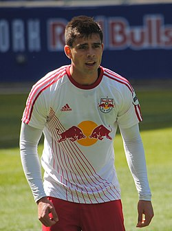

| Nombre | Posición | Edad | Bibliografía | Portada |
|---|---|---|---|---|
| Matt Turner (White) | Portero | 30 | Arquero confiable de la selección estadounidense, ha jugado en la Premier League y MLS. |  |
| Timothy Wright | Defensa | 28 | Defensor sólido, reconocido por su fuerza física y capacidad de anticipación. | |
| Miles Robinson | Defensa | 27 | Defensor central del FC Cincinnati, clave en la zaga de EE. UU. por su velocidad y juego aéreo. | |
| Brenden Aaronson | Mediocampista | 24 | Mediapunta del Union Berlin, conocido por su presión alta, movilidad y visión de juego. | |
| Mark McKenzie | Defensa | 26 | Defensa del Genk belga, con buena salida desde el fondo y solidez defensiva. | |
| Tim Ream | Defensa | 37 | Veterano defensor del Fulham, líder experimentado y referente en la zaga estadounidense. | |
| Josh Sargent | Delantero | 25 | Delantero del Norwich City, con gran capacidad goleadora y presencia ofensiva. | |
| Yunus Musah | Mediocampista | 22 | Mediocampista del AC Milan, destaca por su potencia física y conducción del balón. | |
| Giovanni Reyna | Mediocampista | 22 | Talentoso mediapunta, jugador del Nottingham Forest, con gran técnica y visión de juego. | |
| Tyler Adams | Mediocampista | 26 | Mediocentro defensivo del Bournemouth, capitán de EE. UU. y líder en recuperación. | |
| Weston McKennie | Mediocampista | 27 | Mediocampista de la Juventus, polivalente, fuerte en defensa y con llegada al área rival. | |
| Christian Pulisic | Delantero | 27 | Capitán y estrella de la selección, figura del AC Milan, veloz y con gran capacidad de desequilibrio. |